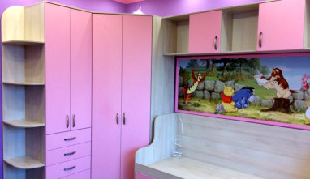

/ исходная страница 0589
Мебель в детскую для мальчика
Мебель на заказ в Ростове-на-Дону.
Открыть оригинал ↗
/ содержание
Шкаф-купе и письменный стол с тумбой и книжным шкафом для детской комнаты. Встроенный шкаф установлен в нише у двери в комнату. Фасады изготовлены из алюминиевого профиля в цвете бронза. Наполнение - большие зеркала и ЛДСП вставки с древесным декором.Большой, удобный и хорошо освещенный письменный стол встроен в пространство у окна комнаты. Корпус, столешница и книжный шкаф изготовлены из того же материала что и шкаф-купе, а выдвижные ящики и двери на тумбе из ЛДСП белого цвета.
Мебель на заказ для дома и офиса. Типовая и эксклюзивная, любые конфигурации и размеры. Современные материалы и комплектующие. Кухни, шкафы-купе, раздвижные перегородки, стенки и многое другое.
© Малко-Мебель 2013-2026
Разделы страницы
- Позвоните нам
Навигация и пункты
- WhatsApp Max +7 (918) 510-69-99 +7 (863) 279-39-80 с 8:00 до 20:00 без выходных
- zakaz@malkomebel.ru
- Все кухни на заказ
- Кухни из массива дерева
- Кухни из шпона
- Кухни "Италия"
- Кухни МДФ c наборным фасадом (под дерево)
- Кухни "под потолок"
- Кухни из МДФ крашеного
- Кухни из МДФ пленочного
- Кухни МДФ-пластик
- Кухни - МДФ рамочный